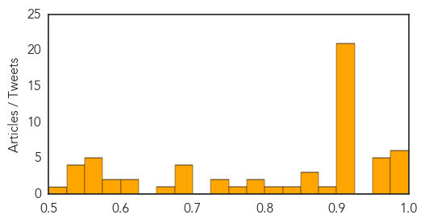
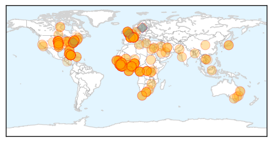
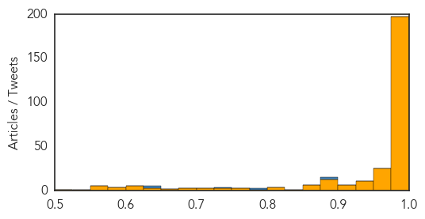

Unknown
30-Day Web Trend
3 alerts, 0 warnings

30-Day Twitter Trend
0 alerts, 0 warnings

Article Locations
Article Confidences
Top Articles:
- 0.997
- Virus outbreak might include 3 kids from Snohomish County
- 0.996
- W.Va. hospitals send suspected enterovirus cases to CDC
- 0.996
- Pitt: Vaccine protects mice against MERS virus
- 0.996
- Enterovirus may have reached Pa., but cases remain low across the country
- 0.986
- Respiratory virus spreading among children in Midwest has not yet been confirmed in ND or Minnesota
- 0.984
- Enterovirus suspected of infecting NKU staff member
- 0.973
- Enterovirus fears flood emergency rooms flooded with patients at Advocate Christ Children's Hospital
- 0.970
- Doctors get direction on how to test for dangerous respiratory virus
- 0.968
- Contagious respiratory virus hits three children in central New York
- 0.966
- Do Older Women Need a High-Dose Flu Vaccine? From the September 2014 Harvard Women's Health Watch
- 0.953
- Cases of Crypto increase in Hillsborough
- 0.917
- Chicago Tribune
- 0.917
- Chicago Tribune
- 0.917
- Chicago Tribune
- 0.917
- Chicago Tribune
- 0.917
- Chicago Tribune
- 0.917
- Chicago Tribune
- 0.917
- Chicago Tribune
- 0.917
- Chicago Tribune
- 0.917
- Chicago Tribune
- 0.917
- Chicago Tribune
- 0.917
- Chicago Tribune
- 0.917
- Chicago Tribune
- 0.917
- Chicago Tribune
- 0.917
- Chicago Tribune
- 0.917
- Chicago Tribune
- 0.917
- Chicago Tribune
- 0.917
- Chicago Tribune
- 0.914
- Notify Health Dept if you come across TB cases – Director – BorneoPost Online
- 0.911
- State health experts concerned about serious respiratory virus
- 0.910
- The world windows to Thailand
- 0.907
- Warren County cat tests positive for rabies, officials say
- 0.890
- NYS Confirms Some Cases Of The Enterovirus
- 0.872
- Chickenpox reported at Carmel High School
- 0.866
- Russia will appeal to WTO over Western sanctions
- 0.866
- Putin looks to Asia as EU announces new sanctions
- 0.841
- South Dakota Health Officials On The Lookout For Enterovirus 68 -
- 0.803
- Doctors, medicines rushed to Srinagar
- 0.785
- Doctors, medicines rushed to Srinagar
- 0.782
- Srinagar needs intensive care as health care crumbles
- 0.764
- Doctors, medicines rushed to Srinagar
- 0.742
- Central Georgia Health System Announces New Brand Identity to Navicent Health
- 0.733
- Indiana State Health Department confirms Enterovirus
- 0.695
- L'immigration requiert une approche européenne courageuse et inclusive
- 0.692
- Superbugs meet their match in rapid genome sequencing
- 0.690
- Respiratory Virus Sending Hundreds of Children to the Hospital
- 0.682
- The most from the coast
- 0.675
- Health Ministry joins relief efforts in J-K
- 0.618
- 8-month wait for surgery
- 0.603
- Majority of emergency visits are minor cases: Rashid HospitalHealthcare
Showing top 50 articles...
Top Tweets:
-
No tweets found for Sep 12, 2014
Ebola
30-Day Web Trend
0 alerts, 0 warnings

30-Day Twitter Trend
0 alerts, 0 warnings

Article Locations
Article Confidences
Top Articles:
- 1.000
- Ebola update: Signs of hope
- 1.000
- If What This Health Expert Just Said About Ebola Is True, We May Be Verging On Catastrophe
- 1.000
- As Ebola grows out of control, WHO pleads for more health workers
- 1.000
- Ebola claims more than 2400 victims according to the World Health Organisation
- 1.000
- WHO appeals global support as Ebola grows out of control
- 1.000
- Nigeria checks S. African as suspected Ebola case
- 1.000
- 4th Sierra Leonean doctor infected with Ebola - Times-Gazette
- 1.000
- WHO meeting chooses untried interventions to defeat Ebola
- 1.000
- WHO: Ebola death toll hits 2,400
- 1.000
- The Ebola Possibility That Virologists Are ‘Afraid to Say’
- 1.000
- Ebola outbreak reaches Senegal, riots break out in Guinea :Friday 29 August 2014
- 1.000
- Ebola Drama: Nigeria Arrests female South African suspect… Tested Negative
- 1.000
- WHO: More Health Workers Needed to Fight Ebola
- 1.000
- U.S. Plans 'Surge' Against Ebola in Western Africa
- 1.000
- Outbreaks: Enterovirus, Ebola, and Mumps
- 1.000
- Ebola Patient in Nebraska Is Improving, Doctors Say
- 1.000
- WHO: More Health Workers Needed to Fight Ebola
- 1.000
- WHO Issues New Appeal As Ebola Toll Rises Above 2,400
- 1.000
- Cuba to send doctors to fight Ebola outbreak as death toll rises
- 1.000
- Ebola toll hits 2,400 as Cuba pledges medics
- 1.000
- Ebola Pandemic Unlikely, Experts Say, But Other Threats Loom
- 1.000
- Cuba To Send 165 Health Workers To Sierra Leone To Help The Country Fight Ebola
- 1.000
- Ebola surging beyond control, WHO's Margaret Chan warns
- 1.000
- Ebola cases double to 62 in the Congo
- 1.000
- Ebola : The Ministry of Health is reassuring the population...
- 1.000
- Ebola toll hits 2,400 as Cuba pledges medics
- 1.000
- Ebola: timeline of a ruthless killer
- 1.000
- Inability to contain Ebola sparks fears of virus going airborne
- 1.000
- As Ebola grows out of control, WHO pleads for more health workers
- 1.000
- WHO: More Health Workers Needed to Fight Ebola
- 1.000
- WHO: New Ebola patients emerging ′faster than capacity to manage them′
- 1.000
- WHO: More Health Workers Needed to Fight Ebola
- 1.000
- Health Officials Struggle to Respond to Ebola Outbreak
- 1.000
- Ebola 'treatment' traded on new black market emerging amid outbreak
- 1.000
- 'Real risk' Ebola virus will mutate to become an AIRBORNE disease, expert warns
- 1.000
- Ebola could hit 15 countries across Africa
- 1.000
- Cuba commits health workers for Ebola response
- 1.000
- Ebola surging beyond control, WHO's Margaret Chan warns
- 1.000
- WHO: More Health Workers Needed to Fight Ebola
- 1.000
- Developments in the Ebola crisis
- 1.000
- WHO: More Health Workers Needed to Fight Ebola
- 1.000
- 4thDoctor to get Ebola treatment abroad
- 1.000
- Ebola spreading rapidly through West Africa
- 1.000
- WHO: More Health Workers Needed to Fight Ebola
- 1.000
- Man Hospitalized With Severe Illness In Rahway After Visiting Nigeria « CBS New York
- 1.000
- Obama to discuss U.S. Ebola response at CDC next week - Xinhua
- 1.000
- Ebola Dwarfed as Threat to Africa by Malaria and HIV/AIDS
- 1.000
- Cuba to send doctors to fight Ebola outbreak as death roll rises
- 1.000
- 165 Cuban Health Workers to Join Fight Against Ebola in West Africa
- 0.999
- 4th Sierra Leonean doctor infected with Ebola
Showing top 50 articles...
Top Tweets:
- 0.926
- RT: Pilgrimage, pandemic, and public health- lessons from Saudi Arabia. MERS Ebola http://t.co/cS8BhK2cdh via
- 0.923
- HCPs: Review new Environmental Infection Control Guidance for Ebola w/staff & safely manage Ebola patient http://t.co/75oD4qOq5M
- 0.888
- RT: The Ebola epidemic is a huge health & security crisis, @DrFriedenCDC RAForum14
- 0.884
- RT: HCPs: Review new Environmental Infection Control Guidance for Ebola w/staff & safely manage Ebola patient http://t.co/75…
- 0.884
- RT: HCPs: Review new Environmental Infection Control Guidance for Ebola w/staff & safely manage Ebola patient http://t.co/75…
- 0.829
- RT: As of 12 September 2014, there are 4,784 Ebola cases and more than 2,400 deaths in Guinea, Liberia and SierraLeone
- 0.812
- @WHO: Dr Chan: We need >1,000 health care workers to be deployed to the existing & upcoming Ebola treatment centres @DHgovuk
- 0.752
- update on ebola cases, deaths; @PAHO on arbovirus surveillance HealthSecurity http://t.co/H1JhGDbj22
- 0.686
- RT: Ebola outbreak in West Africa: read the latest epidemiological update http://t.co/oAbfEgaD1N http://t.co/0y2VdYVwpN